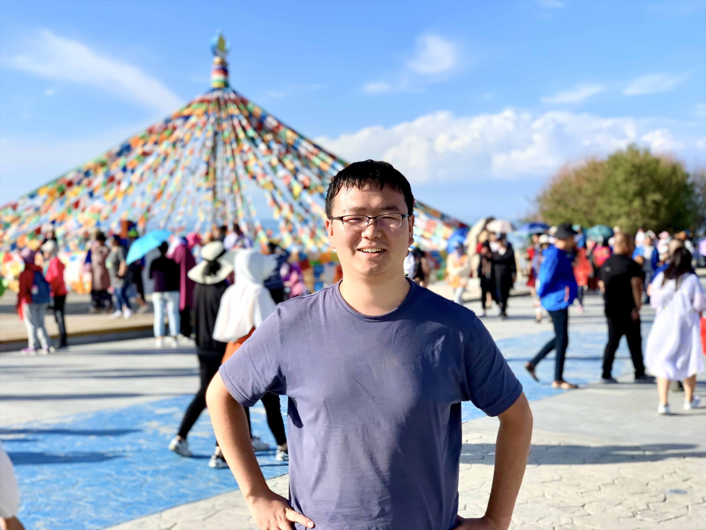

Huaiwen Zhang 张怀文
Professor & Ph.D. Supervisor
College of Computer Science
Inner Mongolia University
Office: Room 505, College of Computer Science
235 West University Road, Hohhot, China
Email: huaiwen.zhang@imu.edu.cn

Biography
I am a Professor and Ph.D. supervisor at the College of Computer Science, Inner Mongolia University. My research focuses on trustworthy artificial intelligence, multimodal intelligence, and media content security. I have been selected for a national young talent program and received the Inner Mongolia Distinguished Young Scholars Fund. I also hold an A3 research position under IMU's Junma Program.
I received my Ph.D. in Pattern Recognition and Intelligent Systems from the Institute of Automation, Chinese Academy of Sciences, where I worked in the Multimedia Computing Group, National Laboratory of Pattern Recognition, advised by Changsheng Xu, Shengsheng Qian, and Quan Fang. I received my B.E. in Computer Science and Technology from Inner Mongolia University in 2016.
Research Interests
- Trustworthy AI and safety: AI value systems, value alignment, machine unlearning, and model hallucinations.
- Multimodal generation and retrieval: multimodal representation learning, controllable generation, and generative retrieval.
- Media content security: rumor detection, fact-checking, and deepfake detection.
- Social media intelligence: opinion mining, cognitive communication, social simulation, and intelligent agents.
Selected Publications
An asterisk (*) denotes the corresponding author.
-
CAGRec: Collaborative-Anchor Guided Multimodal Generative Recommender
Xianglin Yao (undergraduate first author), Yang Yang, Huaiwen Zhang*
ACM Multimedia (MM), 2026 -
Machine Unlearning via Adaptive Gradient Reweighting and Multi-stage Objective Optimization
Juxin Lu, Haoyu Shi, Mengyao Wang, Huaiwen Zhang*
IEEE/CVF Conference on Computer Vision and Pattern Recognition (CVPR), 2026 -
Active Supervised Cross-Modal Retrieval
Huaiwen Zhang, Yang Yang, Fan Qi, Shengsheng Qian, Changsheng Xu
IEEE Transactions on Pattern Analysis and Machine Intelligence (TPAMI), 2025 -
Multi-View User Preference Modeling for Personalized Text-to-Image Generation
Huaiwen Zhang, Tianci Wu, Yiwei Wei
IEEE Transactions on Multimedia (TMM), 2025 -
Evaluating and Mitigating Sycophancy in Large Vision-Language Models
Jiayi Gao, Huaiwen Zhang
ACM Multimedia (MM), 2025 -
Synergizing LLMs with Global Label Propagation for Multimodal Fake News Detection
Shuguo Hu, Jun Hu, Huaiwen Zhang*
Annual Meeting of the Association for Computational Linguistics (ACL), 2025 -
Hierarchical Semantics Alignment for 3D Human Motion Retrieval
Yang Yang, Haoyu Shi, Huaiwen Zhang*
ACM SIGIR Conference on Research and Development in Information Retrieval (SIGIR), 2024 -
T3RD: Test-Time Training for Rumor Detection on Social Media
Huaiwen Zhang, Xinxin Liu, Qing Yang, Yang Yang, Fan Qi, Shengsheng Qian, Changsheng Xu
ACM Web Conference (WWW), 2024
Selected Research Projects
- Multimodal social media fact-checking. National Natural Science Foundation of China (NSFC), General Program. Principal investigator, Jan. 2026–Dec. 2029.
- Intelligent regulation of cognitive communication in multilingual, cross-domain media content. Inner Mongolia Natural Science Foundation, Distinguished Young Scholars Fund. Principal investigator, Jul. 2025–Jun. 2028.
- Early detection of social media misinformation in unseen domains. NSFC, Young Scientists Fund (Category C). Principal investigator, Jan. 2023–Dec. 2025.
- Cross-modal video–text retrieval for Mongolian. Inner Mongolia Natural Science Foundation, General Program. Principal investigator, Jan. 2022–Dec. 2024.
Teaching
- Undergraduate: University Computing D, C++ Programming, Algorithm Design and Analysis.
- Graduate: Natural Language Processing.
- Innovation and entrepreneurship mentoring: Inner Mongolia University Developer Group of Elite Student (IMUDGES) （内蒙古大学精英学生开发者联盟）.
Academic Service
- China Computer Federation (CCF): Deputy Director of the Hohhot Chapter; representative to the 13th CCF Member Congress; Executive Member of the Technical Committee on Multimedia Technology.
- China Society of Image and Graphics (CSIG): Member and Deputy Secretary-General of the Youth Working Committee; Member of the Multimedia Technical Committee.
- Chinese Association for Artificial Intelligence (CAAI): Standing Committee Member of the Youth Working Committee.
- Inner Mongolia Association for Artificial Intelligence (IMAAI): Co-founder, Deputy Secretary-General, and Chair of the Youth Working Committee.
- Standardization: Member of the data and artificial intelligence standardization committees in Inner Mongolia.